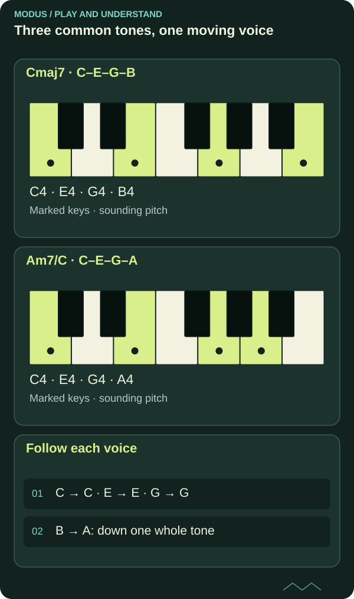

Voice leading: the shortest path between chords
You can connect a progression by following the movement of each note. Some voices can stay in place while others move a short distance.

Think of a chord as several melodies
When you play four notes together, you can think of them as four voices. Each voice can continue to a new note in the next chord. A progression can therefore be heard as several small melodic lines.
Voice leading is about this continuation. It is not just about which chord symbol comes next, but how the individual notes get there.

Read the diagram as text
- Cmaj7 · C–E–G–B: C4 → E4 → G4 → B4
- Am7/C · C–E–G–A: C4 → E4 → G4 → A4
- Follow each voice: C → C · E → E · G → G; B → A: down one whole tone
Keep what already fits
Cmaj7 contains C, E, G and B. Am7 contains A, C, E and G. Three notes are shared: C, E and G.
One possible piano transition is C–E–G–B to C–E–G–A. The three lower voices stay while B moves down a whole tone to A. The final chord is Am7 with C in the bass, or first inversion.
The nearest path is a choice
Small movements can bring calm and continuity. Larger leaps, a change of register or a new bass note may be right when you want contrast and direction. Good voice leading does not mean every voice must always move as little as possible.
On guitar, the construction of the shapes affects what is practical. A shape may double notes or omit a perfect fifth. Consider both the voices you actually play and the musical role you want to highlight.
Try treating the highest voice as a clear melodic line. It can give your chord playing its own story even when the rest of the harmony is simple.
Follow the voice you actually hear
Play C–E–G–B followed by C–E–G–A, listening only to B–A at the top. Then play this line alone. Restore the other notes and see whether you can still hear the movement as a separate melody.
On guitar, you can choose a smaller shape that makes this voice clear. The aim here is to see common tones and movement in a concrete example, rather than cover every rule of part-writing.
FROM READING TO PLAYING
Try it yourself.
Build Cmaj7–Am7 in the chord workshop. Compare root positions with Am7 in first inversion. Then play only the top voice and listen to the line.
Explore inversions in the chord workshopCHECK YOUR UNDERSTANDING
What do you remember?
Three questions about what you have read. Get all three right to complete the quiz. Try as many times as you like.
Completion is saved in this browser and shared between Norwegian and English.
You answered all three questions correctly. Take the idea to your instrument.
Back to the article library ↗︎